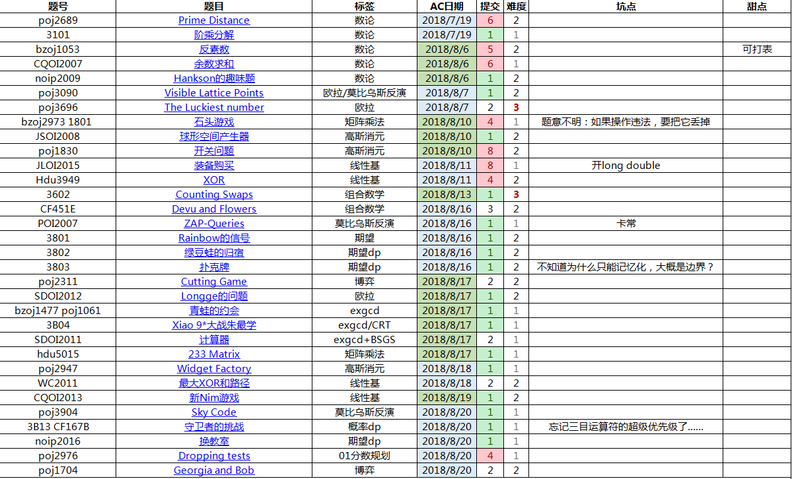
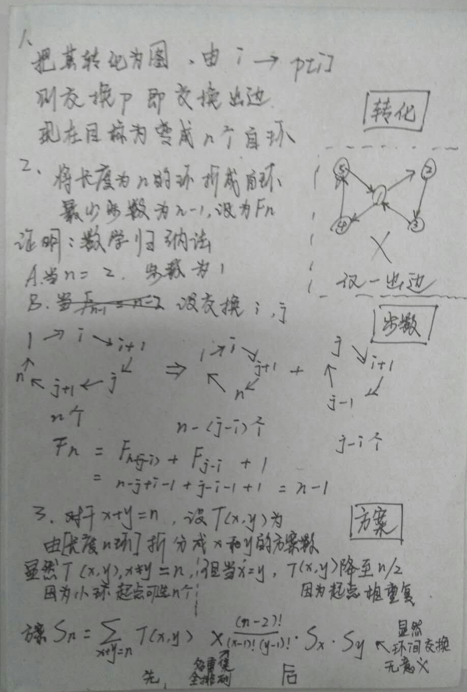

本处难度分档以个人实力为参照系
难度1：半小时内想出，半小时内ac
难度2：半小时想不出，看题解，服气
难度3：半小时想不出，看题解，ac后依然觉得难度很大

0x30 数学
1 POJ2689 Prime Distance
7.19 难度2
有一个很妙的做法：采用类似埃筛的方法筛素数
所以只要线性预处理出前面$\sqrt R$内的素数p，然后在后面搞一搞就好了
复杂度计算：
$$
O(
\sum_{质数p \leq \sqrt R} \frac{R-L}{p}
)
$$
然后根据什么调和级数之类的东西，$1+1/2+1/3+1/4….1/n ≈ log_2 n$
所以说复杂度就大概是$O((R-L) \times log_2 \sqrt R)$
最后提醒各位特判一下1
并且数组的下标是相对位置，错了好多次
2 3101 阶乘分解
7.19 难度1
枚举素数p，考虑贡献，对于次幂为1，有$\frac{n}{p}$个
对于次幂为t，有$\frac{n}{p^t}$个，新贡献恰好为$\frac{n}{p^t}$
所以，枚举每个素数，然后以log的时间计算贡献即可
3 HAOI2007 反素数
8.6 难度2
找找反素数共有的性质吧
性质1：如果约数个数相同，根据性质，应该取最小的
性质2：素因子只有2,3,5,7,11,13,17,19,23
证明：
回忆约数个数公式，只与每个素数的次幂有关。
如果使用更大的素因子，前面这9个中至少有一个空缺（否则超出题目范围）
如果用这个空缺替换，次幂不变，会得到更小的数字，违背性质1
性质3：若将反素数表示为
$
2^{k_2} \times
3^{k_3} \times
5^{k_5} \times
7^{k_7} \times
11^{k_{11}} \times
13^{k_{13}} \times
17^{k_{17}} \times
19^{k_{19}} \times
23^{k_{23}}
$
则
$
k_2 \geq
k_3 \geq
k_5 \geq
k_7 \geq
k_{11} \geq
k_{13} \geq
k_{17} \geq
k_{19} \geq
k_{23} \geq
0
$
证明：
如果不递减，把某个逆序对交换后，
可以得到相同约数下更小的数字，违背性质1
最后用dfs枚举一下就好了
4 CQOI2007 余数求和
8.6 难度1
先化简式子
$
ans
=\sum_{i=1}^n k-\lfloor \frac{k}{i} \rfloor \times i
=nk - \sum_{i=1}^k \lfloor \frac{k}{i} \rfloor \times i
$
这是因为当i>k时，结果就是k
然后这东西初看时线性的，还是会超时
如果有经验的话，可以一眼看出用一个技巧解决
详见套路集锦中枚举方法3
本来不知道怎么算复杂度，反正比k小，曾经听说期望根号
现在已经把书上的证明补充上去了，其实也不复杂
总之就这样枚举过去，等差数列推推式子就好了
5 POJ3090 Visible Lattice Points
8.7 难度2
先分析题目，不难发现要求的是gcd(1~n,1~n)=1的数量
那么可以直接用莫比乌斯
那么我们尝试用欧拉搞一搞
其实就是因为长宽相同，那么对于每一列，累加一下欧拉就好了
6 POJ3696 The Luckiest number
8.7 难度3
x个8连在一起的数字，可以用$\frac{8}{9} (10^x-1)$表示
那么题目要求$L | \frac{8}{9} (10^x-1)$
等效于$9L | 8(10^x-1)$
设$d=gcd(L,8)$假设条件满足，那么L中的偶因子是8的约数
两边同时除以d后，左边不再有偶因子，则右边剩下的偶因子没有意义
$\frac{9L}{d} | 10^x-1$
转化成$10^x=1 (\mod \frac{9L}{d})$
当$gcd(10,\frac{9L}{d})=1$时，
根据中欧拉函数与欧拉定理的定理8，
可枚举其约数，快速幂判断即可
7 bzoj2973 1801 石头游戏
8.10 难度1
脑残题
但是题目居然不说清楚：如果操作违法，要把它丢掉
还有就是一些sb错误，耽误了一个早上
8 JSOI2008 球形空间产生器
8.10 难度2
先推推式子
如果把n+1个点，与球心的距离表示出来，会得出一个多元二次方程组
为了变成一次，考虑把相邻的相减
$\sum (a_{i,j}-x_j)^2-(a_{i+1,j}-x_j)^2=0$
$\sum 2(a_{i+1,j}-a_{i,j})x_j=\sum a_{i+1,j}^2-a_{i,j}^2$
然后高斯消元就好了
9 POJ1830 开关问题
8.10 难度2
如果把异或看做是不进位的加法，那么就很好理解了
10 JLOI2015 装备购买
8.11 难度2
卡精度，要开long double
所以决定以后无脑long double了hh
为了做第二问，贪心地每次找最小的作为主元
证明不会，但是我构造不出反例
本来以为找到一个：
3 2
3 0
4 4
5 0
2 1 3
但其实，经过消元，第一行不会是0
如果非要是0，那么第二行一定是第一行的倍数，则也能反过来……（感觉我表述得乱七八糟，意会一下吧）
11 Hdu3949 XOR
8.11 难度2
key：
高斯消元后，得到的简化阶梯形矩阵，具有一个重要的性质————对于主元i，该列上唯一的1在这上面
所以说，在其他相同的情况下，选i一定比不选要大
所以说，可以把k按二进制拆分，按位，对应于要不要选择第i行
细节：
注意0，线性基可以通过「自己异或自己」得出，但本题不行
所以说特判一下最后的矩阵，就好了，具体自己分析
最后补充一下「异或线性基组合出来的数（即span张成）互不相同」的证明：
假设有一个式子，左右两边都是异或出来的数字，把左边留下某一个，
其他移项到右边，那么出现，那个数字能被其他数字表示出，则违反线性基定义
顺便说说异或能移项的证明：把两边同时异或那个数
|
|
12 3602 Counting Swaps
8.13 难度3

假如写出前面的几个数（谁会这样啊……都退出式子了，也好像化简不出什么）：
1,1,3,16,125
会发现$s[n]=n^{n-2}$
对于k个长度分别为l1,l2,…,lk的环
$ans=\prod s[l_1]*s[l_2]*…*s[l_k]*\frac{(n-k)!}{(l_1-1)!(l_2-1)!…(l_k-1)!}$
13 CF451E Devu and Flowers
8.16 难度2
多重集组合数裸题，讲解
14 POI2007 ZAP-Queries
8.16 难度1
莫比乌斯裸题
15 3801 Rainbow的信号
8.16 难度2
求期望
位运算的特性在于，不同的二进制位之间没有影响
所以为了方便统计，先枚举每一个位，然后分类讨论
线性枚举r
①and
如果出现了0，就是0
那么最后一个0把前面l的取值范围分成两半，其中只有后面的部分有贡献
所以记录一下lst0
②or
如果出现1，就是1
和and同理，记录lst1
③xor
这个稍微麻烦一些，因为取值涉及到1出现个数的奇偶性
那么把按照1的出现次数，分奇偶，形成交替的区间
那么只有贡献为奇数的区间是有用的
用c0、c1分别记录偶数区间和奇数区间的总长度即可
16 3802 绿豆蛙的归宿
8.16 难度2
期望的线性性
17 3803 扑克牌
8.16 难度2
本来写的是倒着dp，好像被卡边界了
结果tm改成记忆化搜索就过了？？
18 POJ2311 Cutting Game
8.17 难度2
博弈
不过，如果出现(1,1)，并定义为必败态，本身没有问题
但考虑只有一行或一列的情况，会把两个有向图游戏异或起来，
然后对方就会“努力翻盘”，导致本来游戏早就结束，却被“莫名其妙翻盘了”
所以要跳过这些状态，并早点判断出必败态：(2,2)和(2,3)
0x3B 数学练习
19 SDOI2012 Longge的问题
8.17 难度2
按照反素数的思路，只考虑前面几个素数，按照约数个数公式dfs
最终得出，在int范围内约数最多约1500个
那么，如果枚举约数s，把它作为gcd的结果
$\sum s \times 「gcd(1 \to n,n)=s的个数」$
$\sum s \times 「gcd(1 \to n/s)=1的个数」$
$\sum s \times \varphi (n/s)$
20 bzoj1477 POJ1061 青蛙的约会
8.17 难度1
同余方程组裸题
t(n-m)+kL=x-y
21 3B04 Xiao 9*大战朱最学
8.17 难度1
同余方程组裸题
22 SDOI2011 计算器
8.17 难度2
裸题
23 HDU5015 233 Matrix
8.17 难度1
矩阵乘法裸题
24 POJ2947 Widget Factory
8.18 难度1
带模数的高斯消元
25 WC2011 最大XOR和路径
8.18 难度2
这道神题的关键在于 利用异或的抵消性质
当然交换、结合律也稍微要用到
对于一个路径，其实就是由链和在上面重叠的环组成
这样以后，你会发现，能对最终答案产生影响的就是一条链和几个环
因为对于重叠的部分或者为了到达环而经过的边（如果原路返回）被自己抵消了
因为这是一个无向图，如果有多条可选的链，而最优的不是这一条，
那当前这一条和它组成了一个环，所以说枚举环的时候异或一下，
自己就又被抵消了，变成了那条链
所以说，随便找一个链，找一些环放上去，让异或和最大
想到异或和会想到线性基
那怎么找环呢？dfs去找不难想到，但枚举起点复杂度过高
其实直接从1开始就好了，对于一个结束的环，可以把当前值异或从起点到这里的代价
这样又抵消掉了
|
|
26 CQOI2013 新Nim游戏
8.19 难度2
根据博弈的基本知识，普通nim游戏在异或和=0的时候必败，否则必胜
那么只要能确保后手无法在第二回合把异或和变成0，那么就胜利
异或和基本上就和线性基有关了，主要是因为，对于异或线性基，
其异或空间除了0，其他的表示方法中每个元素最多用一次
什么情况下，能够把异或和变成0？
就是在某一次插入x中，发现无法插入
因为这意味着，里面的东西能够表示出x
这个时候，当前线性基 xor x=0，后手只要把后面取走就好了
我们的应对策略是把x取走（因为线性基内部，无法表示出0，否则违背定义）
那怎么求第一问，让取走的东西总数最小呢？
有一个精妙的贪心：按照从大到小考虑
这个可以用微扰证明，如果某个位置能用小也能用大，
我们用了大，不会让答案更差，因为线性基能否插入和其他位置无关
Sdoi2016 排列计数
8.29 难度2
同学提醒这道题漏掉了……所以就没有编号了
把其中m个固定后，剩下的就是错排
发现题目要求的是$C_n^m \times D_{n-m}$
27 POJ3904 Sky Code
8.20 难度1
莫反裸题
一开始没想到F(d)那么好求……
复杂度$O(n \sqrt n)$
28 3B13/CF167B/bzoj4636 守卫者的挑战
8.20 难度1
概率dp裸题
但是有很多细节，中文题目不是很清楚
- 必须n个都尝试过，最后再离开
- 某一时刻可以装不下1234567891011121314151617181920212223242526272829303132333435363738394041424344454647using namespace std;namespace mine{int mymin(int x,int y) {return x<y?x:y;}double f[210][210][410];//f(i,vec,k)=「i次开始之前，赢了vec次，当前背包剩余空间为k-200」的概率int p[210],a[210];void main(){int n,L,K;scanf("%d%d%d",&n,&L,&K);for(int i=1;i<=n;i++) scanf("%d",&p[i]);for(int i=1;i<=n;i++) scanf("%d",&a[i]);if(K>200) K=200;//debugf[1][0][200+K]=1;for(int i=1;i<=n;i++)for(int vec=0;vec<=i-1;vec++)for(int bg=-200;bg<=200;bg++){f[i+1][vec+1][200+mymin(bg+a[i],200)]+=f[i][vec][200+bg]*p[i]/100;f[i+1][vec][200+bg]+=f[i][vec][200+bg]*(100-p[i])/100;//fail}double ans=0;for(int i=L;i<=n;i++)for(int j=0;j<=200;j++)ans+=f[n+1][i][200+j];printf("%.6lf",ans);}};int main(){mine::main();}
29 POJ2976 Dropping tests
8.20 难度2
01分数规划裸题
浮点二分果然练得还是太少了
30 POJ1704 Georgia and Bob
8.20 难度2
这是一道传说中的阶梯博弈
其实就是转化为nim游戏
首先，把两堆石子两两捆绑（奇数堆的时候，把第1堆和边界0捆绑）
然后如果每组石子内部，后面的向前移，最多移动就是空格数量
所以如果不考虑前面那个的移动情况，就是一个nim游戏
所以对于先手，如果他是赢家，一定按照nim来
这个时候如果后手突然移动前面，那么先手把后面那个等距离向前移动，
就能还原出相同局面，而且一定能实现
而如果先手是输家，那么和上面同理无法改变结局